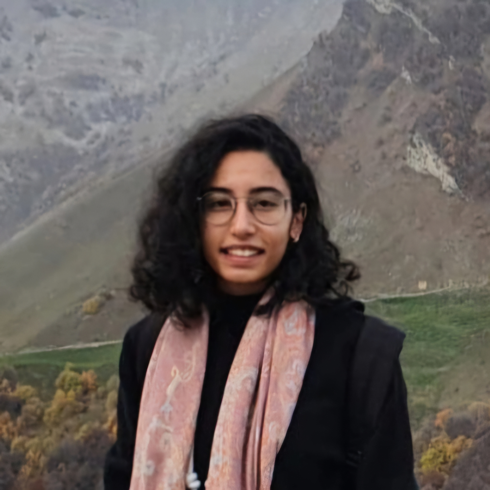

Nuha Diab

I am a PhD student at Tel Aviv University under the supervision of Dr. Dmitry Batenkov. My research interests include Super-Resolution, Matrix Theory and Harmonical Analysis.
2022 - present: PhD student in Applied Mathematics at Tel Aviv University.
2019 - 2022: M.Sc. in Applied Mathematics at Tel Aviv University, Summa Cum Laude.
2018 - 2019: Completion year for M.Sc. in Applied Mathematics at Tel Aviv University.
2014 - 2017: B.Sc. in Computer Science at The University of Haifa, "Etgar" program (in tandem with high school).
Email: nuhadiab@tauex.tau.ac.il
Google Scholar Profile
Publications
Preprints
Awards and Scholarships
- Prof. Rahamimoff Travel Grant for Young Scientists (BSF), February 2025.
- A Fellow of the Excellence Program for Arab Women Students (tariquki 2023), March 2023.
- A Fellow of the Ariane de Rothschild Women Doctoral Program, October 2022.
- Award Certificate for Outstanding Math Students, granted by the Department of Mathematics at TAU, June 2022.
- The Council for Higher Education Scholarship for Arab Students in Graduate Studies, January 2020.
- Award Certificate for Outstanding Students, granted by “The Christian Home” and Haifa Municipality, August 2016.
- Integration of Academic Studies Scholarship, granted by Ministry of Education, October 2015, January 2017.
Teaching
- Calculus 1B for Electrical Engineers (Winter 2024, 2023, 2022)
- Mathematics A, Mathematics B for Life Sciences (Winter 2020)
- Partial Differential Equations for Engineers (Spring 2020)
Recent Talks
- IMU Student Talks Day at Weizmann Institute. September 2024, Rehovot, Israel.
- Women in Mathematics Conference. May 2024, Tel-Aviv, Israel.
- SIAM Conference on Applied Linear Algebra. May 2024, Paris, France.
- Presentation for SiMul Group at Lorraine University. September 2023, Nancy, France.
- EXPOWER Project Workshop. September 2023, Mariaspring, Germany.
- Applied Inverse Problems Conference. September 2023, Gottengin, Germany.
- SIAM Conference on Computational Science and Engineering. March 2023, Amsterdam, Netherlands.
- IM-Workshop. February 2023, Bernried, Germany.
- Curves and Surfaces (accepted with travel support), June 2022, Arcachon, France.
Last updated: 19 Apr 2025